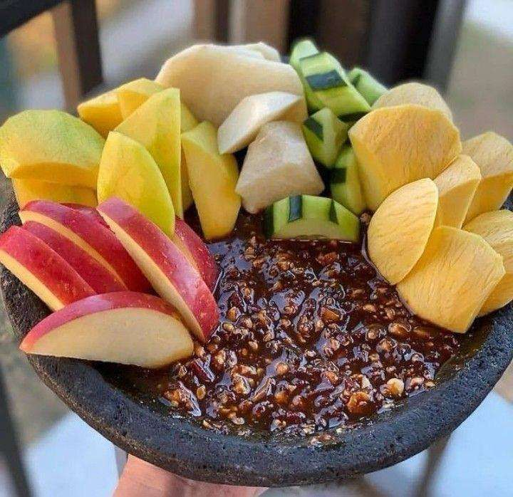
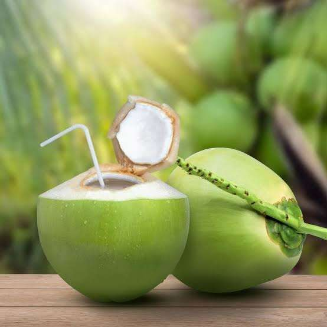

01 / WATERFALL
Air Terjun yang Indah
Air mengalir deras dari tebing batu, menciptakan pemandangan alami yang indah dan menyegarkan.
Air Terjun Nglirip menghadirkan perpaduan air terjun, tebing batu, pepohonan hijau, dan suasana pedesaan yang tenang.
Air Terjun Nglirip berada di Dusun Jojogan, Desa Mulyoagung, Kecamatan Singgahan, Kabupaten Tuban, Jawa Timur. Destinasi ini menawarkan perpaduan aliran air, tebing batu, pepohonan hijau, dan suasana pedesaan yang alami.

Tiga pengalaman utama yang menjadi fokus visual destinasi: air terjun, suasana alam yang asri, dan spot foto.
Air mengalir deras dari tebing batu, menciptakan pemandangan alami yang indah dan menyegarkan.
Pepohonan hijau, tebing batu, dan udara sejuk menciptakan ruang nyaman untuk bersantai.
Keindahan air terjun dan lingkungan sekitar menjadi latar menarik untuk mengabadikan momen.
Nikmati pengalaman sederhana yang membuat perjalanan terasa lebih berkesan.
Melihat aliran air sambil menikmati udara yang sejuk dan menyegarkan.
Abadikan air terjun, tebing batu, dan pepohonan hijau dari berbagai sudut.
Menikmati suara air, udara segar, dan pemandangan hijau.
Mencicipi makanan dan minuman yang dijual masyarakat sekitar.
Air Terjun Nglirip dikenal masyarakat sekitar sejak dahulu. Selain keindahan tebing batu, pepohonan hijau, dan aliran air alami, Nglirip juga memiliki legenda Putri Nglirip yang diceritakan secara turun-temurun.
Kisah tersebut menjadi bagian dari budaya dan cerita rakyat yang membuat kawasan ini memiliki dimensi lebih dari sekadar panorama alam.
Dukung masyarakat sekitar dengan menikmati makanan dan minuman yang tersedia di kawasan wisata.

Jajanan lokal yang dapat dinikmati setelah beraktivitas di kawasan wisata.

Minuman segar untuk menemani waktu beristirahat bersama teman atau keluarga.
Informasi dasar berdasarkan blueprint destinasi yang telah disusun.
Gunakan foto asli Air Terjun Nglirip pada bagian ini untuk memperkuat identitas destinasi.